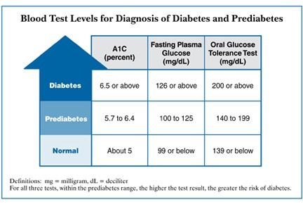
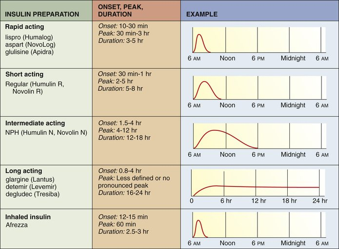
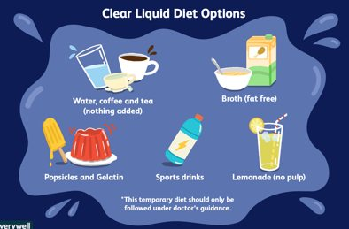
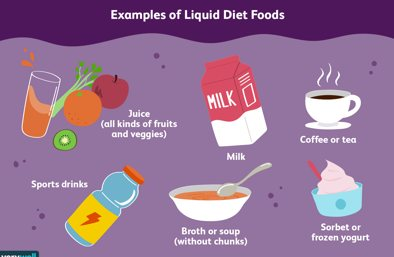
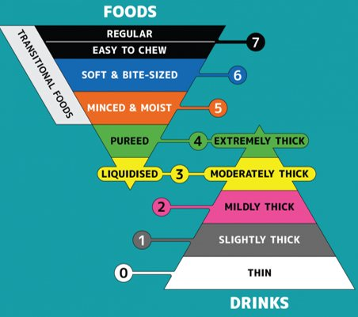

Fundamentals Review · Topic 6
Diabetic Care & Nutrition
Combines two lecture sets: diabetic care (types, diagnosis, insulin, hypo/hyperglycemia, chronic complications) and nutrition (GI basics, nutritional assessment, diet types, dysphagia, enteral/parenteral feeding). Both feed directly into patho-pharm content, so expect overlap between the two courses.
Type 1 vs. Type 2 Diabetes
- Type 1: autoimmune destruction of the pancreatic beta cells (genetic predisposition + environmental trigger). Typically diagnosed in younger patients, with abrupt onset. Only 5–10% of diabetes cases. Patients make no endogenous insulin and require insulin replacement. Classic presentation: the 3 P's — polydipsia (excessive thirst), polyphagia (excessive hunger), polyuria (frequent urination).
- Type 2: beta cells wear out and the body becomes insulin resistant, causing the liver to increase glucose production. More common in adults over 40–45. Can go undiagnosed for years since patients are often screened by risk factors, not symptoms. May be managed with oral/sub-Q agents; some eventually need insulin.
- Type 2 risk factors — non-modifiable: family history, age >45, race/ethnicity (African American, Hispanic, Pacific Islander, American Indian have higher incidence), history of gestational diabetes. Modifiable: physical inactivity, high body weight, high blood pressure, high cholesterol.
Diagnostic Labs & Criteria

| Lab | Normal | Prediabetes | Diabetes |
|---|---|---|---|
| Fasting blood glucose | <100 mg/dL (normal <126 by lecture) | 100–125 mg/dL | ≥126 mg/dL |
| Casual/random glucose | <200 mg/dL | — | ≥200 mg/dL (with symptoms) |
| Hemoglobin A1C | 4–6% | 5.7–6.4% | ≥6.5% |
| OGTT (2-hr) | <140 mg/dL | 140–199 mg/dL | ≥200 mg/dL |
A random/casual glucose greater than 300 mg/dL is considered a medical emergency.
- Hemoglobin A1C reflects average glucose control over the past 3 months — used both for diagnosis and to evaluate treatment effectiveness. For patients with diagnosed diabetes, an acceptable range is 6–8%, with a target around 7%.
- Fasting glucose = no food or drink for at least 8 hours prior.
- OGTT (oral glucose tolerance test) — used almost exclusively to diagnose gestational diabetes. Fasting glucose is drawn, the patient drinks the glucose solution, then glucose is checked every 30 minutes up to 2 hours. Fasting should be <110; 1 hour <180; 2 hours <140.
- Diagnosis requires at least one of: A1C ≥6.5%, fasting glucose ≥126, OGTT 2-hr ≥200, or classic symptoms (3 P's, unexplained weight loss, random glucose ≥200) plus a hyperglycemic crisis (≥300). Type 1 additionally requires islet cell autoantibody testing to confirm.
- Diabetes also increases LDL/triglycerides and decreases HDL on a lipid panel.
Prediabetes & Pharmacologic/Sick-Day Management
- Prediabetes = impaired fasting glucose and/or impaired glucose tolerance. Usually asymptomatic, but long-term damage can already be occurring. Teaching is the most important intervention — diet, exercise, close glucose monitoring, and regular A1C checks.
- Oral diabetic medications are started low and increased gradually based on A1C and fasting glucose; used most often for type 2. In the hospital, oral agents are often held and replaced with insulin during acute illness, since insulin allows tighter glucose control. Hold metformin before procedures (bring this concept forward from pharm).
- Sick-day management: illness causes physiologic stress, which raises blood glucose and increases risk of DKA/HHS. Patients should notify their provider, check glucose more frequently (as often as every 2 hours), keep taking their medications, prevent dehydration, meet carbohydrate needs (juice, Gatorade, Pedialyte), and rest. Steroids (oral or IV) can significantly raise blood glucose and may require an adjusted insulin regimen.
- Call the provider if: urine ketones present, blood glucose >250, fever >101.5°F not responding to Tylenol, confusion/disorientation, rapid breathing, persistent nausea/vomiting/diarrhea, unable to tolerate liquids, or illness lasting longer than 2 days.
Insulin Therapy

- Nursing tries to mimic the body's normal insulin release with a basal-bolus regimen: rapid/short-acting (bolus) insulin before meals, plus a background long-acting (basal) dose once daily (e.g. glargine/Lantus, typically at bedtime).
- Inhaled insulin is FYI only — not commonly used. Know the relative onset/peak/duration ordering of rapid → short → intermediate → long acting.
Insulin is a high-alert medication. Never give insulin without first knowing the patient's current blood glucose. Before administering, confirm: the onset/peak/duration of the insulin being given, the patient's diet order and oral intake (is the patient NPO?), and how you will recognize hypoglycemia if it develops.
Hypoglycemia, Hyperglycemia & Insulin Pumps
- Hypoglycemia = blood glucose <70 mg/dL (though patients with chronically uncontrolled/high glucose may feel symptomatic at higher numbers). Symptoms: sweating, blurry vision, dizziness, anxiety, hunger, irritability, shakiness, tachycardia, headache, weakness, fatigue.
- Rule of 15 (conscious patient, able to swallow): give 15 g of simple carbohydrate (4 oz juice, regular soda, 3 glucose tabs, 1 tbsp honey, 5–8 Life Savers — avoid sugars with fat, which delay absorption). Recheck glucose in 15 minutes; repeat if still <70. In theory, 15 g raises glucose by about 50 points.
- If unconscious/unable to swallow: IM glucagon or IV D50 (25–50 mL dextrose).
- Hyperglycemia — generally 250–300+ mg/dL; anything above 300 is an emergency. Causes: illness/infection, self-management issues, physiologic stress. Symptoms are vague (weakness, fatigue, blurry vision, headache, nausea/vomiting/diarrhea) and can overlap with hypoglycemia. Treatment: check urine ketones, give insulin, encourage/administer fluids, and identify the precipitating cause.
- DKA (diabetic ketoacidosis) and HHS (hyperglycemic hyperosmolar syndrome, the type 2 equivalent) are life-threatening crises usually seen with glucose in the 500–700+ range, with electrolyte abnormalities that can be fatal.
- Insulin pumps deliver a continuous basal infusion of rapid/regular insulin plus bolus doses; patients still check glucose about 4x/day. Pumps and CGMs are typically deactivated in acute inpatient care in favor of standard glucose monitoring and insulin administration. Risks: insertion-site infection, increased DKA risk if the pump malfunctions.
Chronic Complications & Diabetic Foot Care
- Macrovascular damage (large vessels): coronary artery disease, peripheral vascular disease, cerebrovascular disease. Women with diabetes have 4–6× the cardiovascular risk; men have 2–3×.
- Microvascular damage (capillaries): retinopathy (retinal damage — frequent eye exams), nephropathy (kidney damage — diabetes is a leading cause of end-stage renal disease, especially with hypertension), and neuropathy (nerve damage — impaired sensation and circulation, especially in the extremities).
- Diabetic foot care is a major nursing focus: neuropathy causes loss of protective sensation (LOPS), so patients don't feel injuries; combined with poor wound healing and decreased blood flow, this is why foot ulcers and lower-extremity amputation are common complications. Teach daily foot inspection (including the soles) for cuts, swelling, blisters, and redness. A monofilament test checks protective sensation in primary care/clinic settings.
GI Basics, Malnutrition & Factors Affecting Nutrition
- Enteral = nutrition delivered by way of the GI tract (includes normal eating and tube feedings). Parenteral = nutrition delivered outside the GI tract (IV, i.e. TPN). "If the gut works, use it" — enteral is always preferred over parenteral.
- GI tract path: esophagus → esophageal sphincter → stomach (acidic) → pyloric sphincter → small intestine (duodenum, jejunum, ileum) → large intestine/colon (ascending, transverse, descending, sigmoid, rectum) → anus. Water is reabsorbed in the large intestine.
- Malnutrition can mean undernourished or overweight/obese — both are malnutrition. Malnourished patients on admission are at far greater risk for complications (including sepsis), higher readmission and mortality rates, and increased cost of care.
- Factors affecting nutrition: appetite (decreased by illness, medications, pain, depression), past negative food experiences, disease/illness, medications that alter taste, income (healthy food costs more), education level, physical/functional ability to shop and prepare food, access/availability, developmental needs, and cultural/religious/health beliefs.
- Older adults: same vitamin/mineral needs as younger adults, but chronic illness, polypharmacy, and normal GI aging changes (decreased teeth/gum health, saliva, taste buds, thirst mechanism, HCl production, slower metabolism) plus cognitive impairment can all reduce intake. Many older adults need calcium supplementation.
- Cultural considerations: assess for food restrictions/abstentions, religious practices (e.g. fasting, avoiding pork), and don't assume all members of a culture eat identically.
Nutritional Assessment: Labs & the Nursing Process
- Anthropometry = measurement of body size/proportions — height, weight, BMI, skinfold/fat measures. No single lab confirms nutritional status; results are affected by fluid balance, liver/kidney function, and comorbidities.
- Total protein = albumin + globulin. Albumin makes up about 60% of total protein, is synthesized in the liver, has a 21-day half-life, and is a better indicator of chronic nutritional status. Normal range is roughly 3.5–5 g/dL. Albumin also creates oncotic (colloid osmotic) pressure that keeps fluid in the intravascular space.
- Prealbumin has a much shorter half-life (2 days), making it a better indicator of acute nutritional changes.
- Hemoglobin (14–18 males, 12–16 females) — if low, the patient may benefit from iron-rich foods.
- Nutrition history should cover diet history, health history/comorbidities, activity level, medications, age, and psychosocial factors (cognitive disorders, alcohol/drug use).
- A malnourished patient may show: fatigue, apathy, cachexia (gaunt, wasted appearance), pale integument (from low hemoglobin/pallor), poor hair/nail quality, and abnormal vital signs. Nursing diagnosis: imbalanced nutrition, less than body requirements (avoid using a medical diagnosis as the nursing problem).
Diet Types & Progression
- Regular diet: no restrictions.
- Modified texture diets (least to most restrictive of chewing): mechanical soft (foods softened/smaller, no raw fruits/veg/nuts/seeds) → chopped (~½ inch pieces) → ground (~¼ inch) → minced (~⅛ inch) → pureed (smooth, no chewing).
- Clear liquid diet: anything liquid you can see through, with no residue — broth, juices without pulp (apple, grape, not orange/tomato/prune), gelatin, black coffee/tea, clear soda. Full liquid diet: everything on clear, plus anything liquid measurable in mL (all juices, milk-based items) — often a transition step from clear liquid toward a regular diet. Per agency policy, may include pudding/yogurt/grits.
- Therapeutic diets: consistent carbohydrate (formerly "ADA diet"/"no concentrated sweets" — balances carbs/fat/protein by calorie count), cardiac/heart-healthy (low salt, low saturated fat, low cholesterol), low residue (low fiber/roughage — used for colitis/Crohn's flares to rest the gut), high fiber (helps cholesterol, prevents constipation/colon cancer), gluten-free (celiac disease/gluten intolerance), lactose-free, and bland (decreases GI irritation/peristalsis — reflux, ulcers).
- Fluid-restricted diet: for patients retaining excess fluid — classic examples are heart failure and renal failure, as well as hyponatremia (restricting fluid concentrates the serum and raises sodium). Nurses spread the allowed mL across 24 hours.
- NPO = nothing by mouth (pre-procedure, resting the gut, e.g. a Crohn's/colitis flare). Being NPO for 5–7+ days may prompt starting TPN. Always confirm before giving anything by mouth, even ice chips, without an order.
- Diet advancement (typically clear liquid → full liquid → regular) depends on the patient tolerating the current diet: no nausea/vomiting, present bowel sounds, no abdominal distension. Advancing too early can make the patient sick.


Dysphagia & Feeding Assistance

- Dysphagia (spelled with a g) = difficulty swallowing. Dysphasia (spelled with an s) = difficulty talking — a patient can have either or both, commonly after a stroke.
- Warning signs: uncoordinated/slow/weak speech, weak gag reflex, delayed swallow, drooling/pocketing food, regurgitation.
- Silent aspiration = food/fluid enters the airway without the usual cough response (due to decreased sensation) — may only become apparent later via adventitious lung sounds or a resulting pneumonia within 24 hours. Complications of dysphagia: aspiration pneumonia, dehydration, malnutrition, weight loss.
- Liquids may be ordered thickened (nectar, honey, or spoon-thick) to reduce aspiration risk — a patient ordered honey-thickened liquids may not have thin liquids at all. A barium swallow study can evaluate swallowing safety.
- Nursing care: check for oral pocketing, never leave a patient with altered LOC unattended while eating, avoid sedatives/hypnotics before meals in at-risk patients, avoid straws (increase aspiration risk), and don't rush ("double swallow") the patient.
- Feeding assistance: protect safety/independence/dignity, keep the tray within reach, clear clutter/odors from the environment, offer smaller/more frequent meals ("grazing"), honor food preferences, and provide good oral hygiene. For a patient with visual deficits, describe food placement using a clock reference (e.g. "your potatoes are at 3 o'clock").
Enteral & Parenteral Nutrition
- Enteral nutrition (tube feeding) is preferred whenever the gut works — via nasogastric/nasoduodenal/nasojejunal tube (short-term, <4 weeks), or a surgically/endoscopically placed tube for longer-term use: PEG (percutaneous endoscopic gastrostomy) or PEGJ (adds a jejunal extension). A PEG can be used to suction/decompress the stomach while feeding through the J port — but never the reverse.
- Parenteral nutrition (TPN) = IV nutrition given through a central line because it's highly concentrated (a dilute version can run peripherally, but standard TPN in a peripheral vein causes phlebitis). Reserved for when the gut isn't usable — enteral nutrition helps preserve intestinal structure/function, so it's always preferred when possible.
- Confirming tube placement: the only definitive method is X-ray. Injecting air and auscultating ("whoosh test") is outdated and unreliable — do not rely on it. After X-ray confirmation, ongoing placement can be checked by testing the pH of aspirated secretions.
- Signs of feeding intolerance: high gastric residual volume, nausea, cramping, vomiting, severe diarrhea (tube feedings are hypertonic and can pull water into the gut).
- Gastric residual: check per hospital policy — general rule of thumb is to hold feeding and recheck in an hour if residual is >250 mL, and hold + notify the provider if >500 mL. Aspirated residual is returned to the patient, not discarded.
- Administration: bolus/intermittent vs. continuous. Start slow (e.g. ~20 mL/hr) and advance gradually to goal rate as tolerated. Head of bed at minimum 30°, ideally 45° or higher, to reduce aspiration risk.
- Medication administration via feeding tube: verify placement first, flush with water before and after each medication, and give only one medication at a time (crushing/mixing multiple medications together changes their chemistry).
Self-Test Flashcards
Click a card to flip it and check your answer.
What are the classic "3 P's" of type 1 diabetes?
Polydipsia (excessive thirst), polyphagia (excessive hunger), and polyuria (frequent urination).
What A1C, fasting glucose, and OGTT values diagnose diabetes?
A1C ≥6.5%, fasting glucose ≥126 mg/dL, or 2-hour OGTT ≥200 mg/dL.
What does hemoglobin A1C actually measure?
Average blood glucose control over the past 3 months — used for both diagnosis and evaluating treatment effectiveness.
Before giving any dose of insulin, what must you always check first?
The patient's current blood glucose level — insulin is a high-alert medication and should never be given without knowing it.
What is the "Rule of 15" for treating hypoglycemia in a conscious patient?
Give 15 g of simple carbohydrate, recheck blood glucose in 15 minutes, and repeat if still under 70 mg/dL.
What is loss of protective sensation (LOPS) and why does it matter for diabetic foot care?
Diabetic neuropathy prevents patients from feeling injuries to their feet — combined with poor wound healing and decreased circulation, this is why foot ulcers and amputation are common complications.
Albumin vs. prealbumin — which reflects chronic vs. acute nutritional status, and why?
Albumin (21-day half-life) reflects chronic nutritional status; prealbumin (2-day half-life) reflects acute changes.
What's the difference between a clear liquid diet and a full liquid diet?
Clear liquid: anything you can see through with no residue (broth, apple juice, gelatin, black coffee). Full liquid: everything on clear liquid plus any other liquid measurable in mL (milk, cream soups, all juices) — often a transition toward a regular diet.
What's the difference between dysphagia and dysphasia?
Dysphagia (with a "g") is difficulty swallowing. Dysphasia (with an "s") is difficulty talking. A patient can have either or both.
What is silent aspiration, and how might a nurse first notice it?
Food/fluid enters the airway without triggering a cough (due to decreased sensation) — it may only become apparent through adventitious lung sounds or pneumonia developing within 24 hours.
What is the only definitive way to confirm feeding tube placement, and what method is now considered outdated?
X-ray is the only definitive method. Injecting air and auscultating for a "whoosh" sound is outdated and unreliable.
Why is TPN given through a central line rather than a peripheral vein?
TPN is highly concentrated — giving it peripherally causes phlebitis. A dilute version can be given peripherally, but standard TPN requires a central line.
Practice Questions
All 20 Must Know + Extra Practice questions for this section, pulled from the same bank as Build Your Own Exam. Answer each, then submit to see your score and rationales.